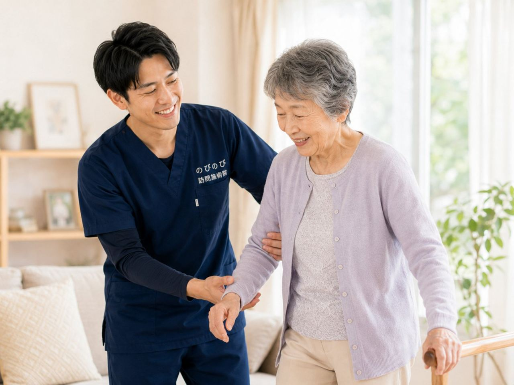

骨折後などに残る痛みは、医師が治療の必要を認めれば医療保険の対象で、保険は鍼灸で算定し、1割負担なら1回およそ395円。介護保険の支給限度額とも別枠です。ただし、患部が赤く腫れて熱をもつなど急な異変があるときは、まず医療機関へご相談ください。 のびのび訪問施術院では、大阪府・兵庫県の対応エリアを中心に、通院がむずかしい方のご自宅へうかがって施術しています。骨折で入院したあと、退院してからどうも元気が戻らない。しばらく寝て過ごすうちに、足腰が弱って立ち上がりにくくなった。ご高齢の方は、少し体を動かさない時期が続いただけで、筋力や体の動きがぐっと落ちてしまうことがあります。こうした状態は「廃用症候群」とも呼ばれます。この記事では、動かない時期を経たあとの体に訪問鍼灸マッサージができること、見逃したくない注意のサイン、そして費用のことまでを、施術の現場からお伝えします。
先に要点を。医師の同意にもとづく医療保険で受けられ、1割負担の方で1回およそ395円が目安です。要介護認定は不要で、介護保険の限度額とは別枠。対応エリア内であれば出張費や交通費の上乗せはなく、料金は一律です。
なぜ、動かない時間が体を弱らせるのか
骨折や病気での入院、あるいは痛みをかばって動くのを控えていた時期。体を動かさない時間が続くと、筋肉は思っている以上に早く落ちていきます。とくにご高齢の方では、数日から数週間、寝て過ごすだけで、立つ・歩くといった動作が難しくなることがあります。筋力が落ちると動くのがこわくなり、こわいからさらに動かなくなる。この悪循環に入ってしまうと、回復には時間がかかるようになります。
こうしたことから、今ある動ける範囲を保ちながら、少しずつ取り戻していくケアが大切になります。 骨折そのものが治っても、その間に落ちた筋力や、固くなってしまった関節は、放っておいて自然に元へ戻るものではありません。退院して「もう大丈夫」と思っていたら、以前のようには動けなくなっていた。そんなご相談を、現場でよくお聞きします。
治療とリハビリが主、鍼灸マッサージは補助という位置づけ
はじめに大切なことをお伝えします。骨折後の体づくりは、まず主治医による治療と、病院や訪問リハビリなどの専門的なリハビリテーションが中心です。訪問鍼灸マッサージは、それに置き換わるものではなく、痛みをやわらげたり、こわばりを軽くしたり、動かしやすい状態を保ったりして、主となる治療やリハビリを支える補助的なケアという立場です。
「どちらか一方を選ぶ」ものではありません。医師の指示やリハビリの方針を確認しながら、そのすき間を埋めるように使っていただくと、無理なく続けやすくなります。訪問リハビリとの違いについては訪問リハビリとの違いもあわせてご覧ください。
ケアを始める前に確認したい、受診のサイン
ケアを始める前に、どうしてもお伝えしておきたいことがあります。骨折した部位がまだ治りきっていない、傷がある、患部が赤く腫れて熱をもっている、強い痛みが続いている。こうしたときは、まず主治医の指示を確認してください。
手術のあとで、動かしてよい範囲に制限がかかっていることもあります。安全にケアを進めるために、こうした点は事前に必ずうかがい、必要に応じて主治医とも相談しながら進めます。
初回の訪問で、体のどこを確かめるのか
お宅に伺ってまず確かめるのは、どの筋肉がどれくらい落ちているか、関節が硬くなりかけていないか、痛みが残っている部位はどこか、そして今どれくらい動けるか、といった点です。ひと口に「体力が落ちた」と言っても、立ち上がりが難しい方、歩くとふらつく方、痛みが動きを止めている方と、状態は一人ひとり違います。今どの段階にいるのかを見きわめたうえで、その日にどこまで動かすかを決めていきます。
無理をさせず、しかし止めてしまわないこと。この見きわめが何より大切です。
落ちた筋力に、鍼灸と機能訓練でどう働きかけるか
鍼やお灸、そして体をほぐす手技には、こわばった筋肉をやわらげ、血のめぐりを促し、残った痛みを軽くする働きが期待できます。あわせて、関節をやさしく動かして動く範囲を保つ機能訓練や、足の指を使う練習、立ち座り・歩行の練習など、その方の段階に合った運動を行います。
無理のない範囲で体を動かすことを続けていくと、少しずつ「できること」が戻っていきます。骨折後などに残る痛みは、医師が治療の必要を認めれば、医療保険の対象になります。
一歩ずつ、動ける範囲を広げていく
たとえば、まず足の指でタオルをたぐり寄せる練習から始め、足首の動きを確かめてから、椅子からトイレまでの歩行練習へと進めていくこともあります。歩幅を大きくしたり小さくしたり、緩急をつけながら歩く練習を組み合わせることもあります。
「少しこわい」とおっしゃる方には、声をかけながら一歩ずつ進めます。変化のあらわれ方には個人差がありますが、一歩の積み重ねが自信につながっていきます。
外出そのものがつらい時期こそ、自宅で
体力が落ちている時期は、外に出ること自体が大きな負担になります。歩くのが不安、転ぶのがこわい、付き添いがないと動けない。この外出という壁がなくなるだけで、ケアはぐっと続けやすくなります。訪問鍼灸マッサージは、医師の同意書があれば医療保険で受けられ、自己負担は1割の方で1回およそ395円。月あたりの目安を知りたい方は訪問鍼灸マッサージの料金もどうぞ。
介護保険の支給限度額とも別枠なので、訪問リハビリやデイサービスと組み合わせて使えます。これはお得な特典ではなく、公的保険にもとづく正式な料金です。慣れた自宅で、自分のペースを崩さずに取り組めるのも、在宅ならではの良さです。たとえば週2回であれば、ひと月およそ3,160円（1割の方）が自己負担の目安です。別枠になる理由は訪問鍼灸は医療保険？介護保険？で詳しく書いています。
「体力が戻ってから」を待つと、かえって遅れる
動かない時間を経たあとの体は、早めに動かし始めるほど、取り戻しやすいものです。「もう少し体力が戻ってから」と待っているうちに、かえって筋力が落ちてしまうことも少なくありません。
まだ本格的に動けなくても、寝たまま・座ったままでできる範囲から始められます。今の状態に合わせて、無理なくできることからスタートしますので、退院して間もない時期であっても、あきらめずにご相談ください。
次の転倒・骨折を防ぐという視点から
一度骨折をすると、動くのがこわくなり、こわいからさらに動かなくなって筋力が落ち、その結果また転びやすくなる。そんな流れに入りやすくなります。それだけに、痛みをやわらげて動ける範囲を保ち、足腰を支える力を落とさないことが、次の転倒や骨折を防ぐことにもつながります。
施術だけで転倒を防げるわけではありませんが、動かしやすい体を保っておくことは、日々の安全にとって確かな意味があります。家の中で気をつけたい動きや、負担の少ない立ち座りの仕方も、その方の状態を見ながらお伝えします。
介助を続けるご家族の負担も、少し軽く
体力が落ちた時期のケアや介助は、ご家族にとっても負担の大きいものです。立ち上がりや移動の介助が続けば、支えるご家族の腰や体にも無理がかかります。
専門の施術者が定期的に入り、ご本人が少しでも自分で動ける範囲を保てるよう支えることは、まわりでケアするご家族の負担を軽くすることにもつながります。施術のたびに体のようすをお伝えし、家の中での介助のちょっとしたコツもお伝えします。
よくある質問
骨折のあと、いつから受けられますか？
骨がつくまでの管理は主治医が中心です。固定や荷重の指示が出ている時期は、その範囲を守りながら、固定していない部分のこわばりを和らげるところから始めます。開始の時期は必ず主治医に確認したうえで進めます。
寝たきりに近い状態でも受けられますか？
受けられます。ベッドの上で横向きや仰向けのまま、負担のない範囲で行います。関節が固まらないように動かす運動も、鍼灸に加えるケアとして、その日の体調を見ながら組み合わせます。
保険は使えますか？
骨折後に残る痛みやこわばりについて医師が施術の必要を認め、通院がむずかしい状態であれば、はり・きゅうの医療保険の対象になります。医師の同意書が必要で、要介護認定は不要です。
どのくらいの頻度で受けるものですか？
体力の落ち方やご本人の負担によりますが、週1〜2回から始めて様子を見ることが多いです。その日の状態に合わせて内容を調整しますので、疲れが出るようなら回数や時間を減らします。
家族は立ち会ったほうがいいですか？
毎回の立ち会いは必要ありません。ただ、初回は普段のご様子やお薬のことをうかがえると助かります。施術のたびに体のようすはお伝えしますので、離れて暮らすご家族にも共有できます。

骨折後の筋力低下・廃用症候群が心配な方へ｜自宅で受ける訪問鍼灸マッサージ
続きを読む
起き上がり・立ち上がりがつらい高齢のご家族へ｜下肢の筋力低下を支える訪問鍼灸
続きを読む
足の付け根の骨折（大腿骨）のあと、歩く力を取り戻したい方へ｜回復期を支える在宅ケア
続きを読む
退院直後の在宅移行期を支える｜訪問鍼灸マッサージで体力を落とさない
続きを読む
パーキンソン病の筋固縮・こわばり・ふるえに｜自宅で受ける訪問鍼灸マッサージ
続きを読む